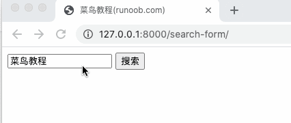
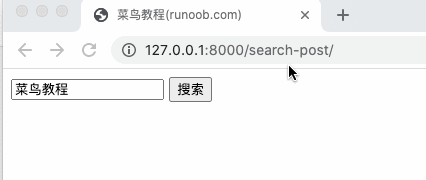

Django 表单
HTML表单是网站交互性的经典方式。 本章将介绍如何用Django对用户提交的表单数据进行处理。
HTTP 请求
HTTP协议以"请求－回复"的方式工作。客户发送请求时，可以在请求中附加数据。服务器通过解析请求，就可以获得客户传来的数据，并根据URL来提供特定的服务。
GET 方法
我们在之前的项目中创建一个 search.py 文件，用于接收用户的请求：
/HelloWorld/HelloWorld/search.py 文件代码：
在模板目录 templates 中添加 search_form.html 表单：
/HelloWorld/templates/search_form.html 文件代码：
urls.py 规则修改为如下形式：
/HelloWorld/HelloWorld/urls.py 文件代码：
访问地址http://127.0.0.1:8000/search-form/并搜索，结果如下所示:

POST 方法
上面我们使用了 GET 方法，视图显示和请求处理分成两个函数处理。
提交数据时更常用 POST 方法。我们下面使用该方法，并用一个URL和处理函数，同时显示视图和处理请求。
我们在 templates 创建 post.html：
/HelloWorld/templates/post.html 文件代码：
在模板的末尾，我们增加一个 rlt 记号，为表格处理结果预留位置。
表格后面还有一个{% csrf_token %}的标签。csrf 全称是 Cross Site Request Forgery。这是 Django 提供的防止伪装提交请求的功能。POST 方法提交的表格，必须有此标签。
在HelloWorld目录下新建 search2.py 文件并使用 search_post 函数来处理 POST 请求：
/HelloWorld/HelloWorld/search2.py 文件代码：
urls.py 规则修改为如下形式：
/HelloWorld/HelloWorld/urls.py 文件代码：
访问http://127.0.0.1:8000/search-post/显示结果如下：

完成以上实例后，我们的目录结构为：
HelloWorld
|-- HelloWorld
| |-- __init__.py
| |-- __init__.pyc
| |-- search.py
| |-- search.pyc
| |-- search2.py
| |-- search2.pyc
| |-- settings.py
| |-- settings.pyc
| |-- testdb.py
| |-- testdb.pyc
| |-- urls.py
| |-- urls.pyc
| |-- views.py
| |-- views.pyc
| |-- wsgi.py
| `-- wsgi.pyc
|-- TestModel
| |-- __init__.py
| |-- __init__.pyc
| |-- admin.py
| |-- admin.pyc
| |-- apps.py
| |-- migrations
| | |-- 0001_initial.py
| | |-- 0001_initial.pyc
| | |-- __init__.py
| | `-- __init__.pyc
| |-- models.py
| |-- models.pyc
| |-- tests.py
| `-- views.py
|-- db.sqlite3
|-- manage.py
`-- templates
|-- base.html
|-- hello.html
|-- post.html
`-- search_form.html
Request 对象
每个视图函数的第一个参数是一个 HttpRequest 对象，就像下面这个 runoob() 函数:
from django.http import HttpResponse
def runoob(request):
return HttpResponse("Hello world")
HttpRequest对象包含当前请求URL的一些信息：
|
属性 |
描述 |
|
path |
请求页面的全路径,不包括域名—例如, "/hello/"。 |
|
method |
请求中使用的HTTP方法的字符串表示。全大写表示。例如: if request.method == 'GET': |
|
GET |
包含所有HTTP GET参数的类字典对象。参见QueryDict 文档。 |
|
POST |
包含所有HTTP POST参数的类字典对象。参见QueryDict 文档。 服务器收到空的POST请求的情况也是有可能发生的。也就是说，表单form通过HTTP POST方法提交请求，但是表单中可以没有数据。因此，不能使用语句if request.POST来判断是否使用HTTP POST方法；应该使用if request.method == "POST" (参见本表的method属性)。 注意: POST不包括file-upload信息。参见FILES属性。 |
|
REQUEST |
为了方便，该属性是POST和GET属性的集合体，但是有特殊性，先查找POST属性，然后再查找GET属性。借鉴PHP's $_REQUEST。 例如，如果GET = {"name": "john"} 和POST = {"age": '34'},则 REQUEST["name"] 的值是"john", REQUEST["age"]的值是"34". 强烈建议使用GET and POST,因为这两个属性更加显式化，写出的代码也更易理解。 |
|
COOKIES |
包含所有cookies的标准Python字典对象。Keys和values都是字符串。 |
|
FILES |
包含所有上传文件的类字典对象。FILES中的每个Key都是<input type="file" name="" />标签中name属性的值. FILES中的每个value 同时也是一个标准Python字典对象，包含下面三个Keys:
注意：只有在请求方法是POST，并且请求页面中<form>有enctype="multipart/form-data"属性时FILES才拥有数据。否则，FILES 是一个空字典。 |
|
META |
包含所有可用HTTP头部信息的字典。 例如:
META 中这些头加上前缀HTTP_为 Key, 冒号(:)后面的为 Value， 例如:
|
|
user |
是一个django.contrib.auth.models.User 对象，代表当前登录的用户。 如果访问用户当前没有登录，user将被初始化为django.contrib.auth.models.AnonymousUser的实例。 你可以通过user的is_authenticated()方法来辨别用户是否登录：
if request.user.is_authenticated():
# Do something for logged-in users.
else:
# Do something for anonymous users.
只有激活Django中的AuthenticationMiddleware时该属性才可用 |
|
session |
唯一可读写的属性，代表当前会话的字典对象。只有激活Django中的session支持时该属性才可用。 |
|
raw_post_data |
原始HTTP POST数据，未解析过。 高级处理时会有用处。 |
Request对象也有一些有用的方法：
| 方法 | 描述 |
|---|---|
| __getitem__(key) | 返回GET/POST的键值,先取POST,后取GET。如果键不存在抛出 KeyError。 这是我们可以使用字典语法访问HttpRequest对象。 例如,request["foo"]等同于先request.POST["foo"] 然后 request.GET["foo"]的操作。 |
| has_key() | 检查request.GET or request.POST中是否包含参数指定的Key。 |
| get_full_path() | 返回包含查询字符串的请求路径。例如， "/music/bands/the_beatles/?print=true" |
| is_secure() | 如果请求是安全的，返回True，就是说，发出的是HTTPS请求。 |
QueryDict对象
在HttpRequest对象中, GET和POST属性是django.http.QueryDict类的实例。
QueryDict类似字典的自定义类，用来处理单键对应多值的情况。
QueryDict实现所有标准的词典方法。还包括一些特有的方法：
| 方法 | 描述 |
|---|---|
|
__getitem__ |
和标准字典的处理有一点不同，就是，如果Key对应多个Value，__getitem__()返回最后一个value。 |
|
__setitem__ |
设置参数指定key的value列表(一个Python list)。注意：它只能在一个mutable QueryDict 对象上被调用(就是通过copy()产生的一个QueryDict对象的拷贝). |
|
get() |
如果key对应多个value，get()返回最后一个value。 |
|
update() |
参数可以是QueryDict，也可以是标准字典。和标准字典的update方法不同，该方法添加字典 items，而不是替换它们:
>>> q = QueryDict('a=1')
>>> q = q.copy() # to make it mutable
>>> q.update({'a': '2'})
>>> q.getlist('a')
['1', '2']
>>> q['a'] # returns the last
['2']
|
|
items() |
和标准字典的items()方法有一点不同,该方法使用单值逻辑的__getitem__():
>>> q = QueryDict('a=1&a=2&a=3')
>>> q.items()
[('a', '3')]
|
|
values() |
和标准字典的values()方法有一点不同,该方法使用单值逻辑的__getitem__(): |
此外, QueryDict也有一些方法，如下表：
| 方法 | 描述 |
|---|---|
|
copy() |
返回对象的拷贝，内部实现是用Python标准库的copy.deepcopy()。该拷贝是mutable(可更改的) — 就是说，可以更改该拷贝的值。 |
|
getlist(key) |
返回和参数key对应的所有值，作为一个Python list返回。如果key不存在，则返回空list。 It's guaranteed to return a list of some sort.. |
|
setlist(key,list_) |
设置key的值为list_ (unlike __setitem__()). |
|
appendlist(key,item) |
添加item到和key关联的内部list. |
|
setlistdefault(key,list) |
和setdefault有一点不同，它接受list而不是单个value作为参数。 |
|
lists() |
和items()有一点不同, 它会返回key的所有值，作为一个list, 例如:
>>> q = QueryDict('a=1&a=2&a=3')
>>> q.lists()
[('a', ['1', '2', '3'])]
|
|
urlencode() |
返回一个以查询字符串格式进行格式化后的字符串(例如："a=2&b=3&b=5")。 |
taoto
tao***ht@gmail.com
遇到问题：
执行search请求 响应，出现错误 ，中文解析不了：
解决办法，添加如下代码到 search.py
import sys reload(sys) sys.setdefaultencoding('utf8')taoto
tao***ht@gmail.com
zifengxue
win***20180331@gmail.com
楼上说的中文解析不了的问题我也遇到了，加 u 标记成 unicode 字符即可。
改成
zifengxue
win***20180331@gmail.com
碧海蓝天
190***2210@qq.com
参考地址
以下这行代码
会报以下错误
ImportError: cannot import name 'render_to_response' from 'django.shortcuts'原因是在Django 2已经弃用了render_to_response, 应当替换成以下代码
碧海蓝天
190***2210@qq.com
参考地址